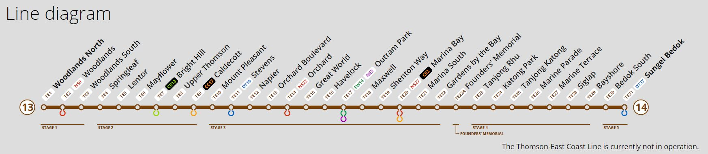

Proposal
About
The rapid growth of Singapore’s economy and society in the early 1960s necessitated a comprehensive land use and transportation plan. As Singapore had no seamless integration of public transportation in the early 1960s, journeys were long and inconvenient. Therefore, the planners of the State and City Planning Project introduced the Mass Rapid Transit (MRT) system in 1967 to serve as an island-wide public transportation system that aims to enhance connectivity between the city centre and residential districts.
The Mass Rapid Transit (MRT) is the metro system of Singapore, providing daily passenger rail service across the island with an extensive network of train lines. They are provided by public transport operators (PTOs) SBS Transit and SMRT Trains. Currently, there are 5 MRT lines in Singapore and there is a 6 one that is coming up in the next few years which is the Thomson-East Coast Line (TEL).
Today, the MRT station is managed by the Land Transport Authority (LTA) and is currently working on the Thomson-East Coast Line (TEL) MRT station. The Thomson-East Coast Line is a fully underground and driverless MRT line that connects the Northern and Eastern regions via the Central region and the new downtown. There will be 32 stations, running from Woodlands North(TE1) to Sungei Bedok(TE31).
Motivation
It will open in stages from Year 2020 to 2025. There will be five phases to the launch of this MRT line:
Stage 1 Woodlands North(TE1) - Woodlands(TE3) - Opened on 31 January 2020.
Stage 2 Springleaf(TE4) - Caldecott(TE9) - Opened on 28 August 2021.
Stage 3 Mount Pleasant(TE10) - Gardens by the Bay(TE22) - Opened on 13 November 2022
Stage 4 Founders' Memorial(TE22A) - Bayshore(TE29) - Projected to open on 2024
Stage 5 Bedok South(TE30) - Sungei Bedok(TE31) - Projected to open on 2025

Our team is more interested in Thomson-East Coast Line Stage 4, which comprises 8 stations between Founders' Memorial and Bayshore that were scheduled for opening in the Year 2024. However, Founders' Memorial(TE22A) will open in tandem with the Founders' Memorial which is projected to open in 2027 so we decided to exclude it as a station in our project.
We want to understand whether the new Thomson-East Coast Line is still aligned with our original goal of better connecting the city centre and residential districts by comparing it to older MRT lines. For this we will be comparing the Thomson-East Coast Line with the North-South Line specifically from Yio Chu Kang(NE15) to Toa Payoh(NE19) which is the oldest station in Singapore that opened on 7 November 1987. Ultimately, we would like to use the derived insights gained from the analysis to provide justification on whether the Thomson-East Coast Line's goal is still aligned with the old MRT stations and if not what would be one of the main reasons for it.
Objective
The following pointers summarise our project objectives.
Create of digitised web maps via QGIS of catchment areas based on walking distance of 5,10 and 15 minutes of each stations of the Thomson-East Coast Line and North-South Line
Analysis of Residential area at each MRT stations
Analysis of Accessibility of Thomson-East Coast Line to East Coast Park
Provide insights and justification for Thomson-East Coast Line objective
Gain learning experience and project exposure